Estructura del Sol
El Sol es nuestra estrella. Todas las estrellas mantienen un delicado equilibrio entre la fuerza de la gravedad —producida por su propia masa, que tiende a comprimir el astro— y la presión del gas caliente, provocada por la energía que se libera en su interior mediante reacciones termonucleares de fusión, que hace que se expanda.
Estas reacciones de fusión convierten el hidrógeno (el componente inmensamente mayoritario de las estrellas) en elementos más pesados. Este equilibrio hidrostático se mantendrá en nuestro Sol durante los próximos 5000 millones de años. Con el tiempo, dicho equilibrio irá evolucionando y, con él, nuestra estrella, que pasará por diferentes etapas en las que cambiarán su luminosidad, su tamaño y su color. La duración y el destino de estas etapas están determinados estrictamente por la masa con la que nacen las estrellas.
El Sol tiene una estructura interna bien definida:
- El núcleo: En el centro del Sol se alcanzan temperaturas altísimas, de unos 15 millones de grados Celsius.
- La zona convectiva
- La fotosfera: Es la superficie visible del Sol, la capa que vemos desde la Tierra, y su temperatura ronda los 5500 °C.
- La corona: Por encima de la superficie solar se extiende la corona, una atmósfera externa gaseosa que, curiosamente, está a mucha más temperatura que la propia fotosfera. La corona es extremadamente tenue, pero podremos observarla directamente a simple vista durante los eclipses totales de Sol del 12 de agosto de 2026 y del 2 de agosto de 2027.
Nuestra estrella tiene una gran actividad, tanto interna como externa. Desde la Tierra, utilizando la protección adecuada, se pueden observar manchas solares y gigantescas explosiones llamadas fulguraciones. El Sol también emite continuamente partículas al espacio, un flujo conocido como viento solar. Cuando estas partículas llegan a la Tierra, interactúan con el campo magnético terrestre y son desviadas hacia los polos, dando lugar a las espectaculares auroras boreales y australes.
En la siguiente animación podéis ver la estructura del Sol
Para saber más sobre el Sol, su estructura y las diferentes capas que lo forman, te recomendamos descargar el siguiente documento del proyecto CESAR desarrollado por la Agencia Espacial Europea (ESA), el Instituto Nacional de Técnica Aeroespacial.
Tamaño del Sol y distancia a la Tierra
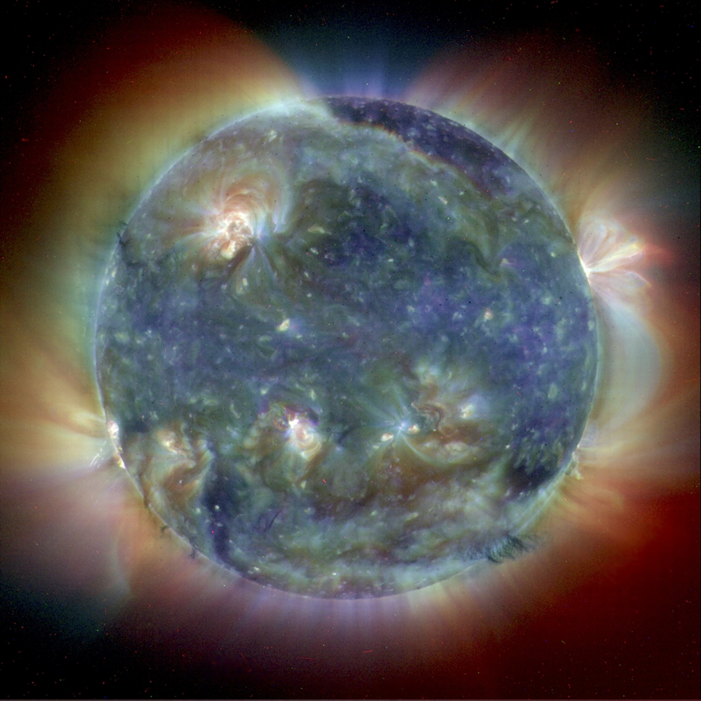
El Sol tiene un diámetro de aproximadamente 1,39 millones de kilómetros, más de 100 veces el de la Tierra. Su volumen es tan grande que podría contener más de 1 millón de planetas como la Tierra. Se encuentra, como media a 150 millones de km de la Tierra por lo que la luz que vemos del Sol tarda unos 8 minutos en llegarnos.
Gracias a su gravedad, todos los planetas, incluida la Tierra, se mantienen en su órbita. Ala Tierra le aporta luz, calor y energía en las cantidades precisas para que se haya producido la vida. Nuestro planeta está en la zona de habitabilidad de nuestra estrella.
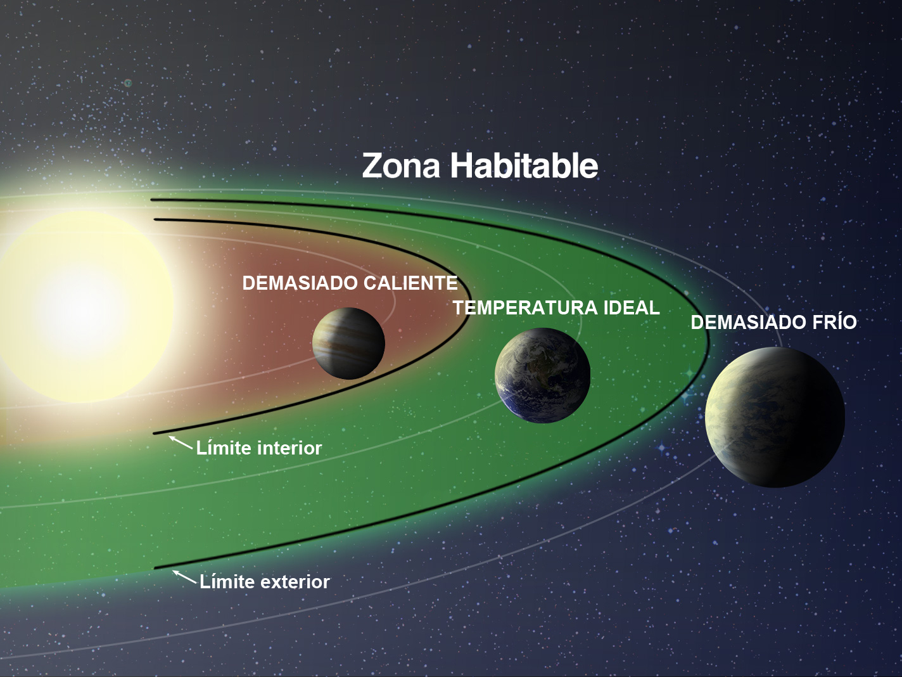
La órbita de la Tierra alrededor del Sol es una elipse. Pero su escentricidad es tan baja (aproximadamente de 0.017 que casi es una circunferencia. Cuando la Tierra se encuentra más lejos del Sol se dice que está en el Afelio, por el contrario cuando se encuentra más cerca se dice que está en el Perihelio. La diferencia entre el ambas distancias será de casi cinco millones de kilómetros.
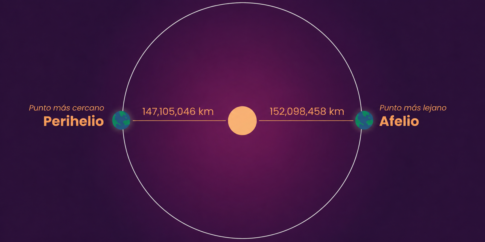
¿Cómo observan los astrónomos y astrónomas el Sol desde la superficie terrestre?
Para estudiar el Sol, los astrónomos utilizan telescopios de observación solar ubicados en Tierra, satélites y observatorios en órbita.
En España, los principales observatorios dedicados al estudio del Sol están concentrados en las Islas Canarias debido a su situación geográfica excepcional unida a la transparencia y excelente calidad astronómica de su cielo. Gracias a estas condiciones, el Observatorio del Teide es un referente mundial en el estudio del Sol. Las instalaciones están gestionadas por el el Instituto de Astrofísica de Canarias (IAC).
La Agencia Espacial Europea (ESA), también tiene un observatorio solar en sus instalaciones del Centro Europeo de Astronomía Espacial (ESAC) en Madrid.
Aquí tenéis un poco de información sobre algunos de estos telescopios solares
TELESCOPIO GREGOR
Un telescopio solar con una apertura de 1,5 m, está diseñado para medir con alta precisión el campo magnético y el movimiento del gas en la fotosfera y cromosfera solares,
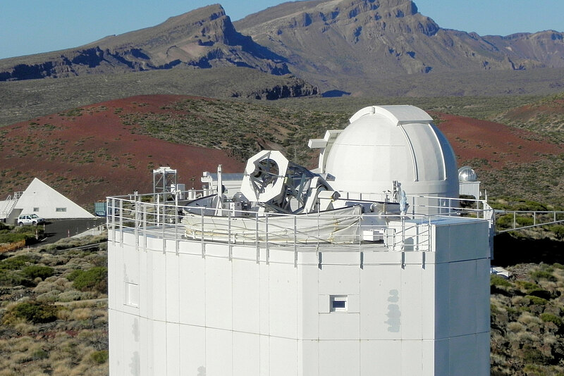
THEMIS
El Telescopio Heliográfico para el Estudio del Magnetismo y las Inestabilidades Solares, THEMIS, Es un telescopio solar de 90 cm de apertura útil y, actualmente, es el tercero más grande del mundo.
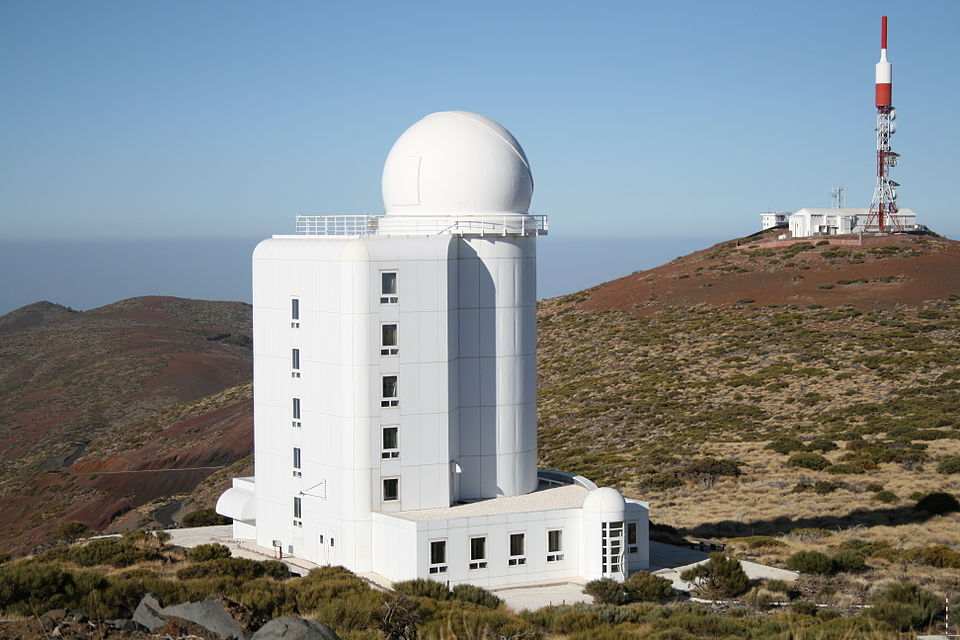
Telescopio Solar Europeo (EST)
Es la gran apuesta europea para la investigación solar. Este gran telescopio será construido en la isla de La Palma, y, con un espejo primario de 4,2 metros de diámetro y una altura de 44 metros, será el mayor telescopio solar del continente. Su tecnología puntera proporcionará a los astrónomos una herramienta única para entender el Sol y cómo este determina las condiciones del espacio cercano a la Tierra.
España lidera el consorcio internacional del EST a través del Instituto de Astrofísica de Canarias (IAC) y el Instituto de Astrofísica de Andalucía (IAA-CSIC). El Telescopio Solar Europeo se construye en el Observatorio del Roque de los Muchachos, en la isla de La Palma y podría estar en funcionamiento en 2029.
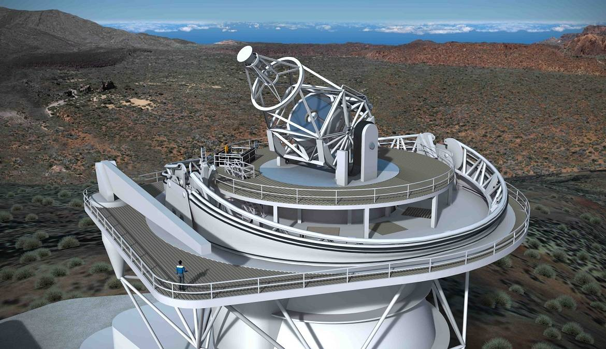
HELIOS
El observatorio HELIOS de ESAC está formado por tres telescopios que operan durante el día y estudian el Sol en diferentes longitudes de onda, lo que permite observar distintas capas (Fotosfera, Cromosfera, Corona, etc) y fenómenos solares. La comparación de imágenes obtenidas con diferentes filtros y en diferentes longitudes de onda, es una herramienta clave en la astrofísica solar para comprender la dinámica y evolución del Sol. Están ubicados en las instalaciones de la ESA en Madrid.
Las siguientes imágenes, han sido obtenida por el instrumento Helios. permitiendo comparar la imagen del Sol en el rango del visible y la obtenida utilizando en determinadas longitudes de onda. Con estos filtros los científicos de ESAC permiten observar la capa exterior del Sol, la cromosfera y revelar detalles dinámicos invisibles a simple vista como prominencias, erupciones, etc.
Ahora te mostramos una imagen preparada por los científicos de ESAC para que podáis comparar como se ve el Sol en el rango visible y como se ve utilizando los filtros rojo y azul.
- Filtro rojo (llamado H-Alpha): Este filtro deja pasar solo la luz roja y nos permite ver una capa del Sol donde suceden cosas muy llamativas, como “llamaradas solares". En la imagen de más abajo puedes comparar como se "ve" el Sol con un filtro que solo reduce la iluminación (visible) y como con el filtro rojo.
La siguiente compara la imagen del Sol obtenida en el visible con la obtenida utilizando el filtro azul (llamado Calcio-K). : Este filtro deja pasar luz azul y nos ayuda a ver zonas muy brillantes, donde el Sol está muy activo.
¿Cómo observan los astrónomos y astrónomas el Sol desde el espacio?
Desde principios de la década de los 90, la ESA (Agencia Espacial Europea) ha llevado a cabo varias misiones espaciales que se han dedicado a estudiar la actividad solar. Ejemplos de ellas son las misiones Ulises y SOHO. La segunda, lanzada en 1995, todavía está operativa, y los datos que ambas han obtenido han servido para que los científicos propongan nuevas misiones que amplíen nuestros conocimientos del Sol.
Misión SOHO
La Misión SOHO fue lanzado el 2 de diciembre de 1995 y se encuentra 1,5 millones de kilómetros más cerca del Sol que de la Tierra. Desde esa posición la nave tiene una visión ininterrumpida de nuestra estrella. Para observar la corona solar simulan un eclipse solar. Para ello, llevan instrumentos llamados coronógrafos, que consisten en un detector de luz (una cámara) combinado con un disco externo para bloquear la luz del Sol.
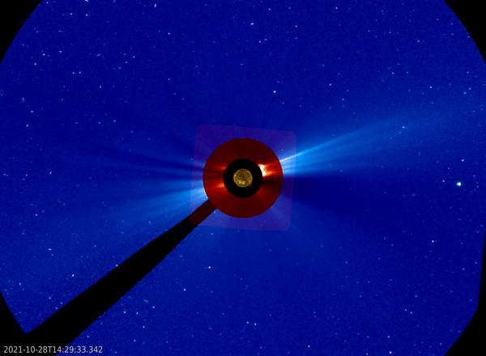
Aunque en principio los objetivos eran el estudio de la estructura interna y la atmósfera exterior (la corona) del Sol, además de observar dónde y cómo se aceleran las partículas del viento solar; también ha sido el descubridor de cometas más prolífico en la historia de la astronomía.
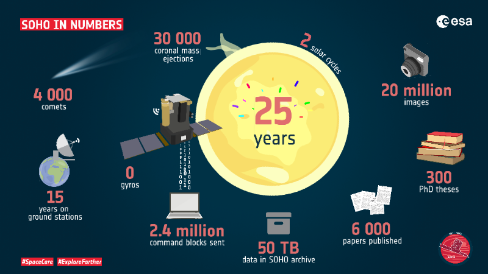
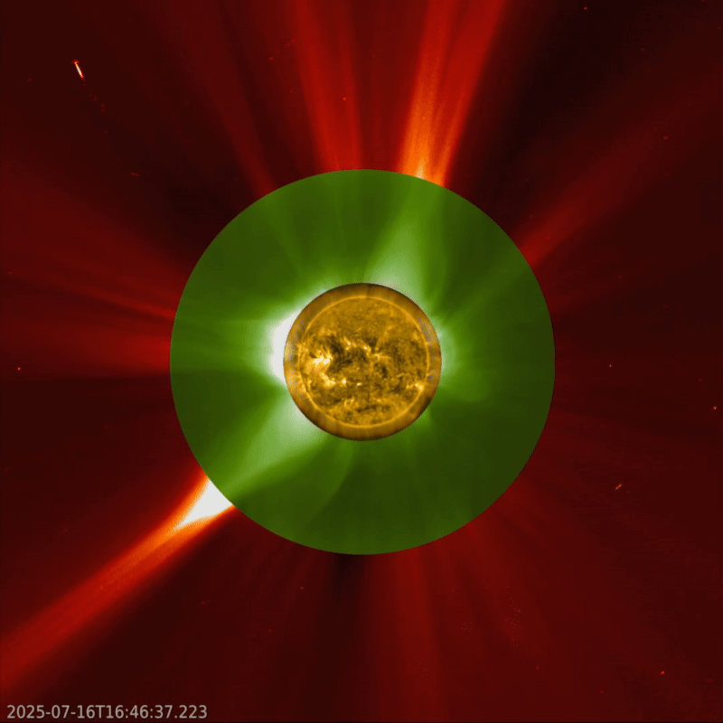
PROBA-3
La misión PROBA-3 de la ESA fue lanzada en 2024 y está observando una porción mayor de la corona interna del Sol que otras naves como SOHO o PROBA-2 gracias al vuelo de dos naves espaciales separadas por 150 metros. La nave ocultadora de PROBA-3 cumple la función de la Luna en un eclipse solar, bloqueando la luz directa del Sol. los eclipses artificiales de PROBA-3 duran varias horas.
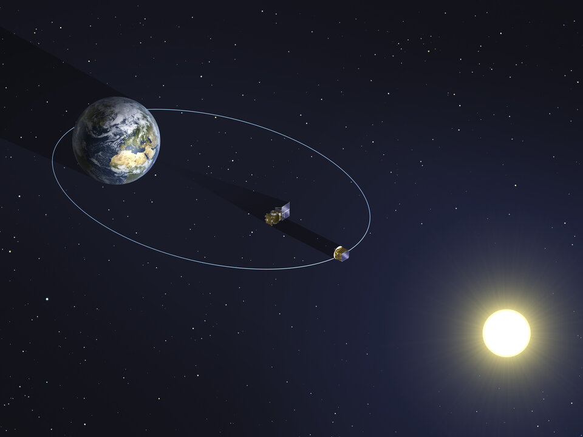
En esta web, tenéis una panorámica de todas las misiones solares que lleva a cabo la Agencia Espacial Europea (ESA)
Misión Parker
La sonda solar Parker de la NASA orbita cada vez más cerca de la superficie solar, dentro de la órbita de Mercurio. Al adentrarse por primera vez en la parte más externa de la atmósfera solar, la corona, la sonda Parker está recopilando mediciones e imágenes que ampliarán nuestro conocimiento sobre el origen y la evolución del viento solar .
Los datos que recopile serán cruciales para predecir los cambios en el entorno espacial que afectan la vida y la tecnología en la Tierra.
Y nosotros, ¿cómo debemos observar el Sol?
La norma general es que nunca se debe observar el Sol directamente. Para hacer una observación con seguridad, debemos proyectarlo sobre una superficie. Existen numerosas formas de hacerlo. Os proponemos algunos, que después profundizaremos.
- SOLARSCOPE.
Este dispositivo especial de proyección viene provisto con una serie de lentes que permite observar cómodamente a más de una persona la proyección del Sol.
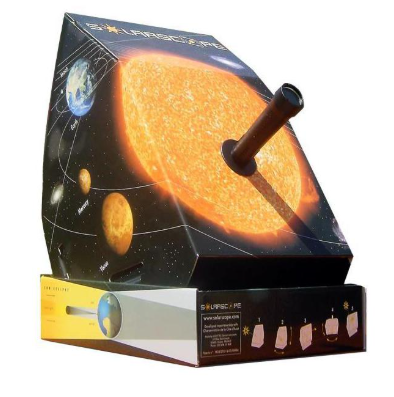
y realizar una observación cómoda del astro.
2. CAMARA ESTENOPEICA.
Otra manera es utilizar una cámara estenopeica construida a partir de una caja de cartón y ver como se proyecta el Sol en el fondo de la caja, estando el Sol de espaldas al observador.
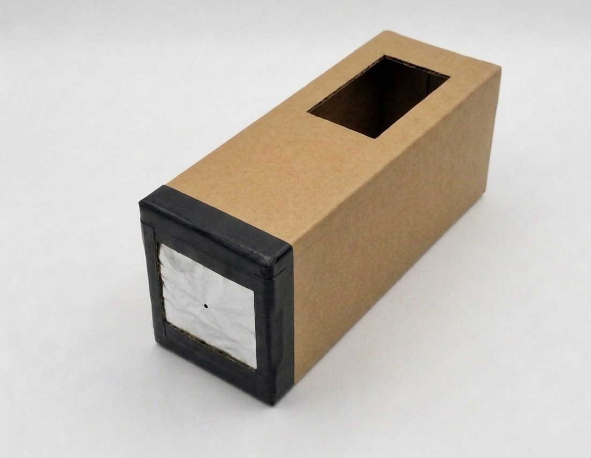
3. COLADOR O ESPUMADERA.
Un colador, la espumadera de cocina o un agujero practicado en una cartulina también nos servirán para observar el Sol
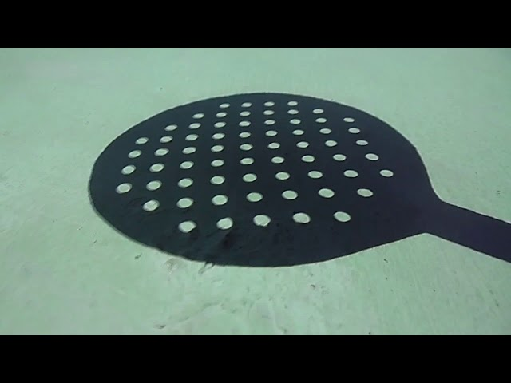
4. ESPEJO CONCAVO
Si cogemos un pequeño espejo cóncavo (de los que se utilizan para maquillarse), tapamos completamente con una cartulina la superficie espejada, excepto una pequeña parte central. Dirigimos el espejo al Sol y lo reflejamos en una superficie (una pared) que esté a la sombra. Tendremos una imagen del Sol bastante interesante.
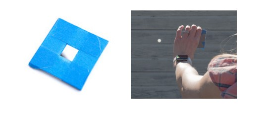
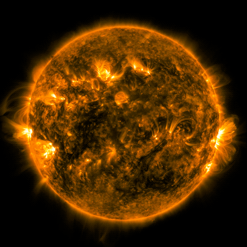